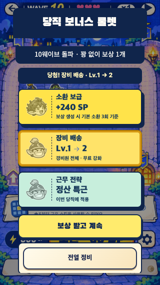
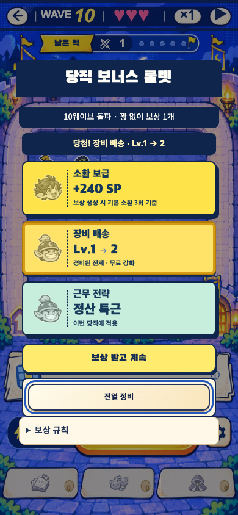
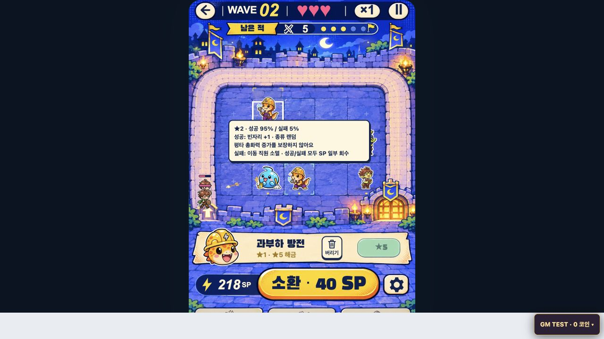

기존 삽화와 레이아웃은 유지하고 전투 흐름·경제·보상을 변경했습니다.



지원 영웅·영구 강화·일일 변주·마왕 도움 없이 4개 시드씩, 0.5초마다 조작. idle은 처음 5명만 배치, merge는 소환·합성·퇴장, active는 장비·스킬도 사용. 31은 30웨이브 통과 후 측정 종료입니다. 사람의 난이도 평가는 아니며 장기 밸런스 확정 수치가 아닙니다.
| 방식 | 시드 | 종료 웨이브 | 소환 | 합성 | 잔여 SP |
|---|---|---|---|---|---|
| idle | 1 | 7 | 5 | 0 | 1690 |
| idle | 2 | 6 | 5 | 0 | 1358 |
| idle | 3 | 7 | 5 | 0 | 1976 |
| idle | 4 | 9 | 5 | 0 | 1997 |
| merge | 1 | 21 | 140 | 85 | 156.25 |
| merge | 2 | 20 | 123 | 109 | 154 |
| merge | 3 | 23 | 141 | 97 | 152.75 |
| merge | 4 | 23 | 130 | 111 | 104 |
| active | 1 | 31 | 274 | 127 | 199.75 |
| active | 2 | 26 | 161 | 141 | 151 |
| active | 3 | 25 | 169 | 146 | 35 |
| active | 4 | 21 | 112 | 99 | 129 |
핵심 런타임 3,334건 통과. 모바일 신규 기능 3개 시나리오 통과(320/390px, 재접속 결과 유지·중복 지급 차단·드래그 퇴장 포함).